湾区单车共享系统（Bay Area Bike Share）是一家为旧金山、雷德伍德城等城市的客户提供按需单车租赁的公司。使用者可在每个城市的各种车站解锁单车，然后在同城内的任何一个车站还车。使用者可通过按年订购（年度会员）或购买 3 日或 24 小时（短期会员）通票来付费。
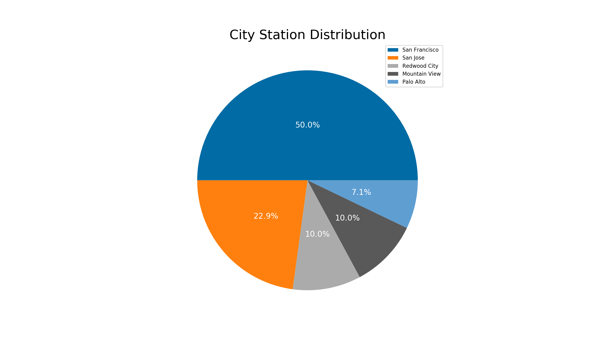
该公司共在 5 个城市为用户提供了共享单车服务，分别是：San Francisco、San Jose、Redwood City、Mountain View 和 Palo Alto。其中，有 50% 的 station 位于 San Francisco。
本报告分析了 2014 年 9 月 1 日到 2015 年 8 月 31 日这一年的用户行为数据。
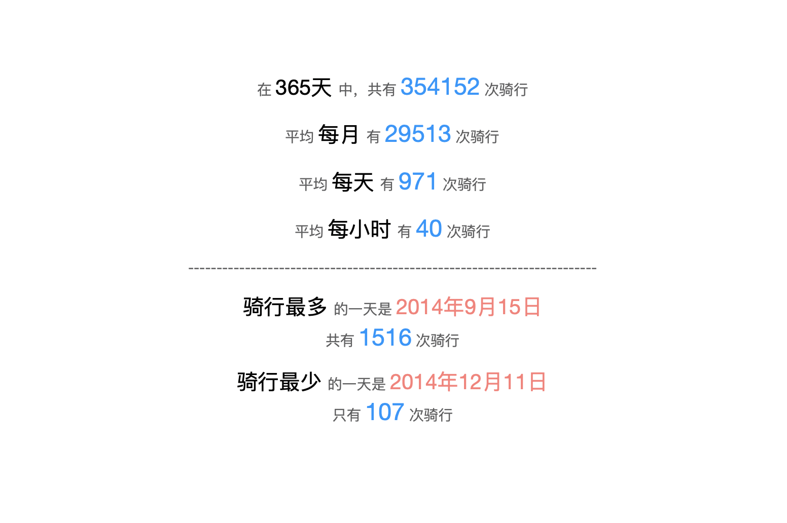
公司共为用户提供了 70 个站点（Station）。每个站点都可作为 Start Station 和 End Station。
Start Station 的使用情况分布如下：
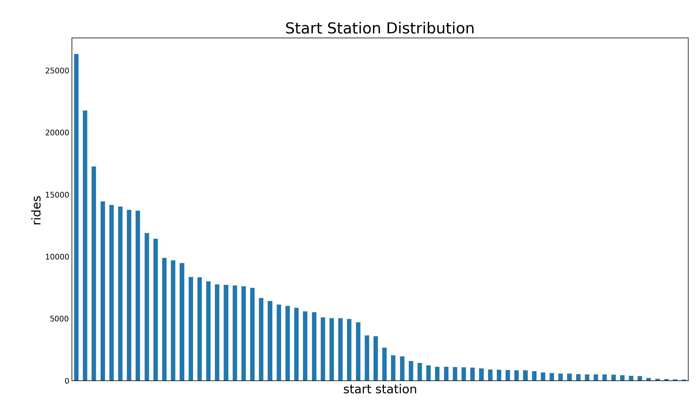
从图表可以看出，不同的 Start Station 的使用情况差别较大。使用最多的前 50% Station 占据了所有使用数量的绝大多数。
被使用最多的前 10 个 Start Station 是：
| Start Station | Rides |
|---|---|
| San Francisco Caltrain (Townsend at 4th) | 26304 |
| San Francisco Caltrain 2 (330 Townsend) | 21758 |
| Harry Bridges Plaza (Ferry Building) | 17255 |
| Temporary Transbay Terminal (Howard at Beale) | 14436 |
| Embarcadero at Sansome | 14158 |
| 2nd at Townsend | 14026 |
| Townsend at 7th | 13752 |
| Steuart at Market | 13687 |
| Market at 10th | 11885 |
| Market at Sansome | 11431 |
最受欢迎（使用最多）的 3 个 Start Station 是 San Francisco Caltrain (Townsend at 4th)、San Francisco Caltrain 2 (330 Townsend) 和 Harry Bridges Plaza (Ferry Building)。
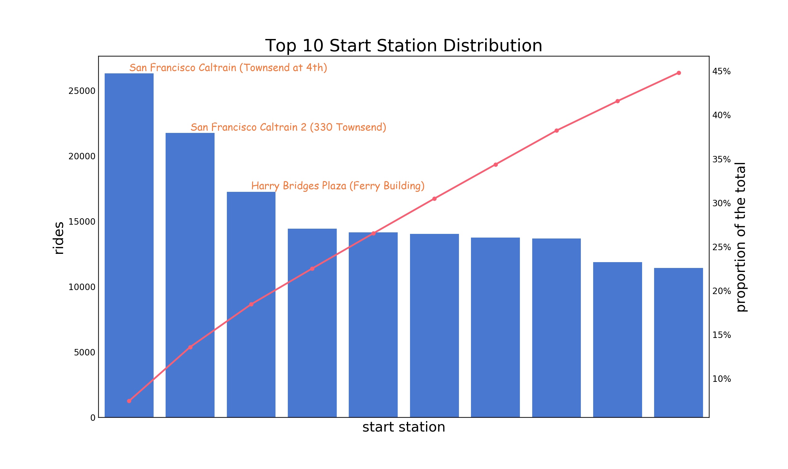
使用数量最多的前 10 个 Start Station 占据了所有 Start Station 使用数量的 44.8%。
End Station 的使用情况分布如下：
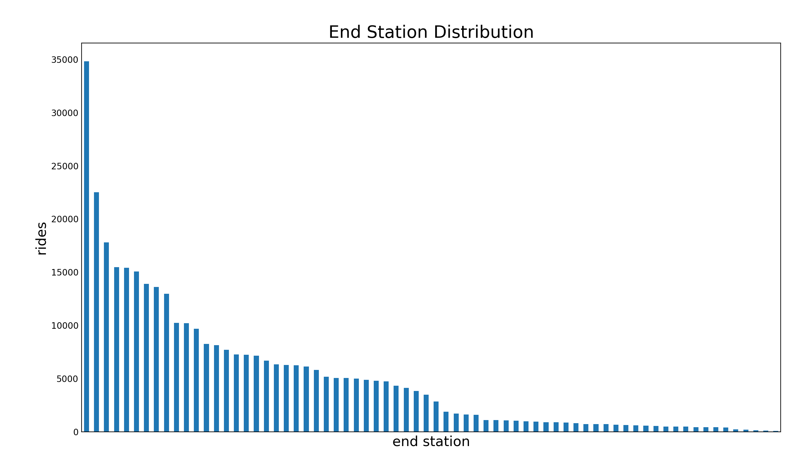
被使用最多的前 10 个 End Station 是：
| End Station | Rides |
|---|---|
| San Francisco Caltrain (Townsend at 4th) | 34810 |
| San Francisco Caltrain 2 (330 Townsend) | 22523 |
| Harry Bridges Plaza (Ferry Building) | 17810 |
| 2nd at Townsend | 15463 |
| Townsend at 7th | 15422 |
| Embarcadero at Sansome | 15065 |
| Market at Sansome | 13916 |
| Steuart at Market | 13617 |
| Temporary Transbay Terminal (Howard at Beale) | 12966 |
| Powell Street BART | 10239 |
最受欢迎的 3 个 End Start Station 是 San Francisco Caltrain (Townsend at 4th)、San Francisco Caltrain 2 (330 Townsend) 和 Harry Bridges Plaza (Ferry Building)。
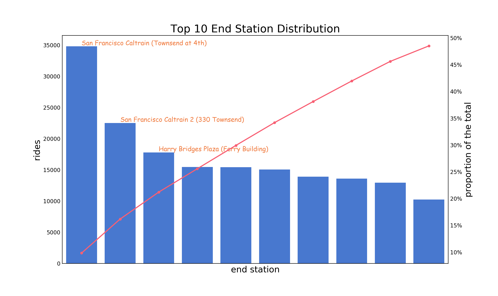
使用数量最多的前 10 个 End Station 占据了所有 End Station 使用数量的 48.5%。
End Station 和 Start Station 的使用情况类似。
被使用最多的前 3 个 Start Station 和 End Station 是一样的，均是 San Francisco Caltrain (Townsend at 4th)、San Francisco Caltrain 2 (330 Townsend) 和 Harry Bridges Plaza (Ferry Building)。
被使用最多的前 10 个 Start Station 和 End Station 中只有一个 Station 是两者有区别的，其它 9 个都一样（但排名有所区别）。这说明对于这些最受欢迎的 Station，对于 Start 和 End 的需求是差不多的（数量相差也不是很多）。这是一个好消息，这样公司就不用花费较多的资源去专门调度这些单车，来解决 Station 之间车辆数值差距较大的问题。
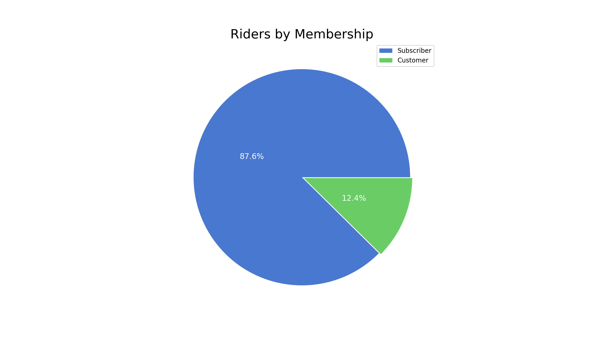
在全部的使用用户中，有 87.6% 的用户为年度会员，12.4% 的用户为短期会员。
从 2014 年到 2015 年，用户的骑行次数增长了 131962 次，增长率为 118.8%。
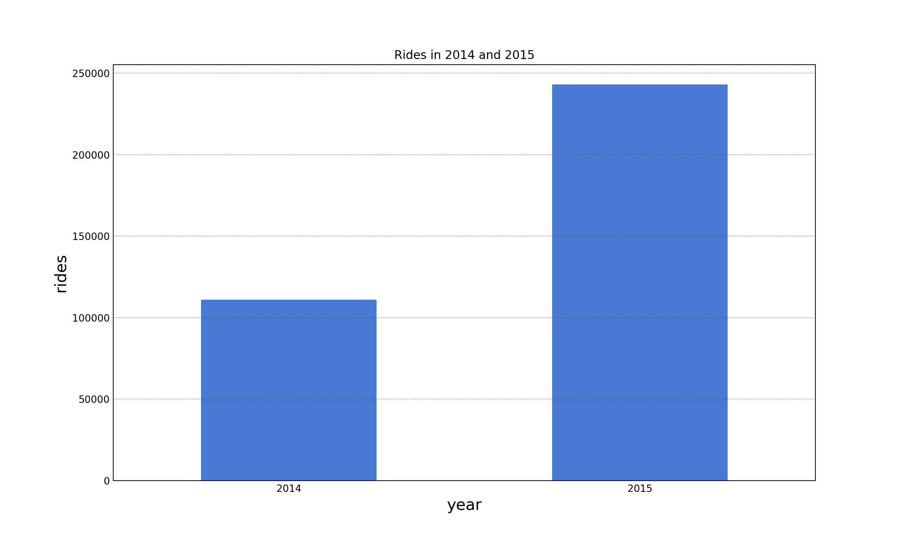
在这一年中，年度会员的使用次数远远超过短期会员。在 11 月份和 12 月份的时候用户的使用次数明显下降；其中 10 月份是一年中使用最多的月份，12 月份是这一年中使用最少的月份。
其中，11 月份和 12 月份使用次数明显减少的原因可能是在这两个月的时间里会有时间相对较长的假期，用户上班/上学的天数减少；而由于其中的很多用户利用共享单车是用来上班/上学的，所以就会使得这两个月里总的使用次数减少。
与之对应的建议是，如果公司要对单车进行较长时间的类似于维护等相关的工作，那么最好在一年的第 12 月份进行。
从图中也可以看出，从 3 月份到 10 月份，短期用户的使用数量较其它月份更多，并且每个月的使用情况变化很小。原因可能是，短期用户主要是来短暂旅行的游客，从 3 月份到 10 月份美国的旅游业都较其它月份的旺盛。
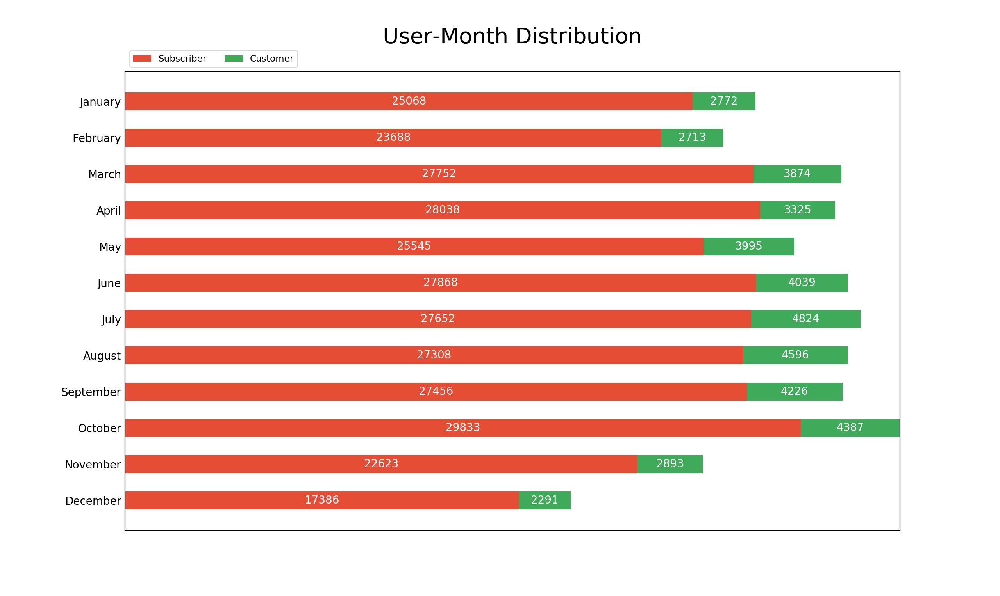
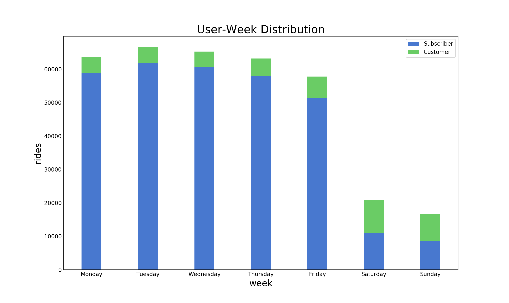
在一周中，周一到周五的总的使用数量要比周六和周日更多。年度会员用户在周一到周五的使用量要远远多于短期会员，而在周六和周日，年度会员用户和短期会员用户的使用量差距不大。
对年度会员用户来说，周一到周五用户会用共享单车来进行上下班，对共享单车的使用较多；周六和周日对共享单车的使用明显减少。说明工作日内使用共享单车上下班的人在非工作时间更喜欢用其它的交通工具出行，或者出行减少（需要更多相关数据来验证）。
对短期用户来说，周六和周日相对工作日内对共享单车的使用次数增多。原因是更多的人们会选择在周六和周日去目的地旅行。
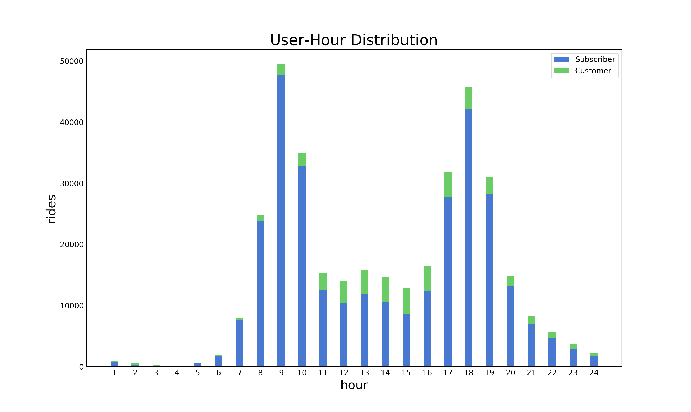
在一天当中，用户更喜欢在白天使用共享单车。其中，在早上的 9 点和下午的 6 点用户使用共享单车的数量最多，分别对应人们的上下班时间。在中午 1 点的时候共享单车的使用数量会有一点增加，原因可能是部分用户会用共享单车来到达吃午饭的地方。
如果公司要对单车进行较短时间的类似于维护等相关的工作，那么最好在一天中的凌晨 3、4点进行。
在早上 9 点到下午 6 点之间，年度会员用户对共享单车的使用次数呈现“U”型分布，而短期会员用户在这段时间的使用数量变化则相对较小。这也进一步说明年度会用用户更多的是将共享单车作为上下班的交通工具，而短期用户则不是。从图中也可以看出，短期用户在早上 11 点开始之后到下午的 18 点，对共享单车的使用都较多，并且较平稳。这也是验证短期用户主要为旅客的一个证据。
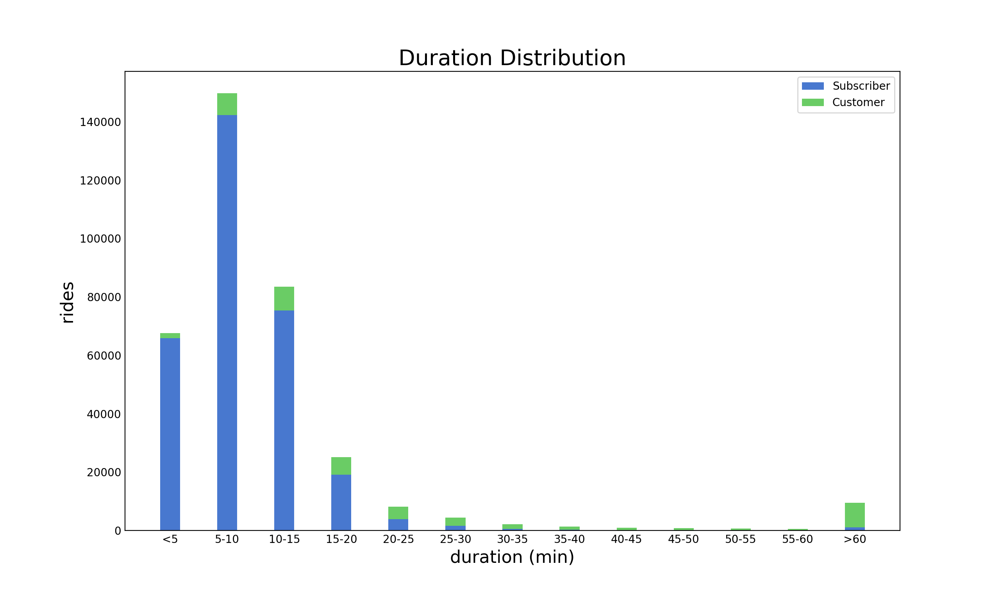
用户使用共享单车的时间大部分为 5-10分钟。绝大部分用户的使用时间都在半个小时以内。这与产品的收费策略密切相关（三十分钟内的行程不收取额外费用；更长行程将产生超时费）。这说明用户绝大部分用户都不会去支付超出三十分钟的额外费用。
有一部分用户使用共享单车的时间会超过 1 个小时，并且在这些用户中，绝大部分都是短期会员用户。
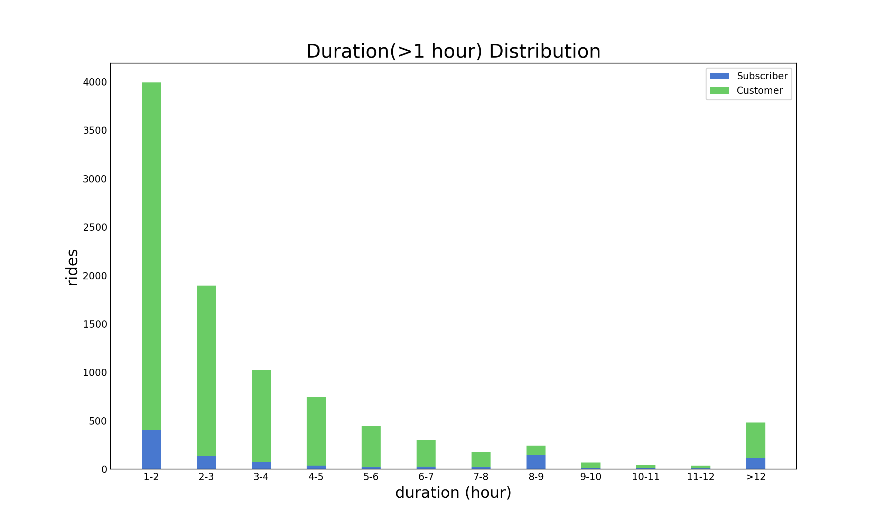
在使用超过 1 个小时的用户中，大部分都是短期会员用户。并且大部分的使用时间会在 7 个小时之内。
导致这种情况产生的原因可能是短期用户（游客）对产品的定价策略相对不熟悉；以及也有可能会有其它的一些意外的原因如忘记锁车、被盗、产品 bug、迷路等。
因此，可以考虑对短期用户进行更详细或频繁的产品使用方法、费用规则等内容的展示和推送。如果有类似于地图导航、紧急呼叫等服务，那么可以更多的考虑用短期用户的使用情况去建立和改善。
在使用时间为 8-9 小时的用户中，年度会员用户的数量超过了短期会员用户，有点异常，但暂时未找到原因。
下图表示的是从最受欢迎的 Start Station 到最受欢迎的 End Station 的骑行数量。
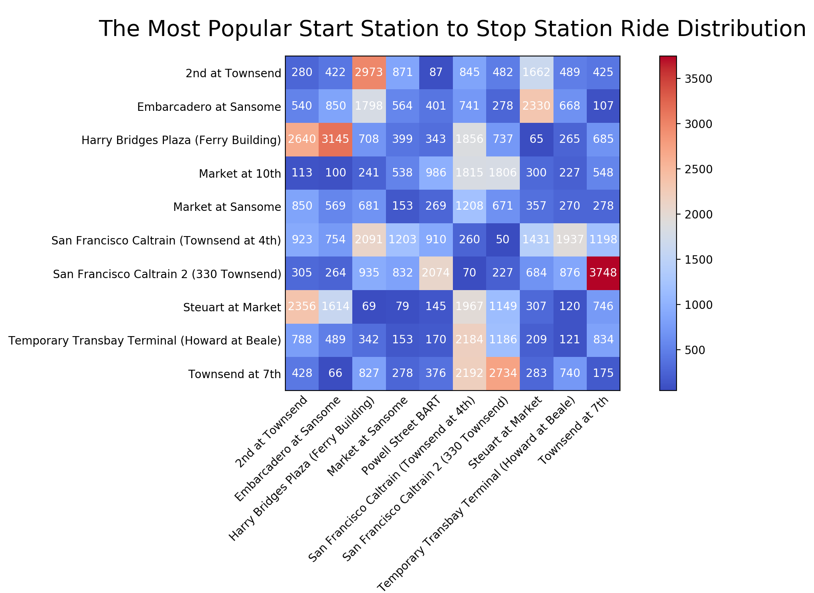
从图中可以看到，有大约 1/5 的路线被采用数量超过了 1000。其中，从 San Francisco Caltrain 2 (330 Townsend) 出发到达 Townsend at 7th 的路线被采用的数量最多，达到了 3748 次。